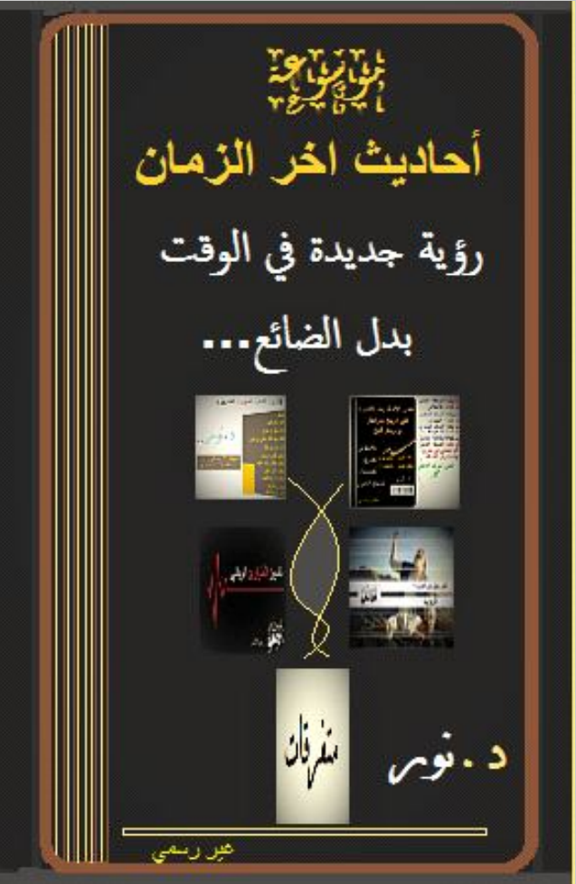
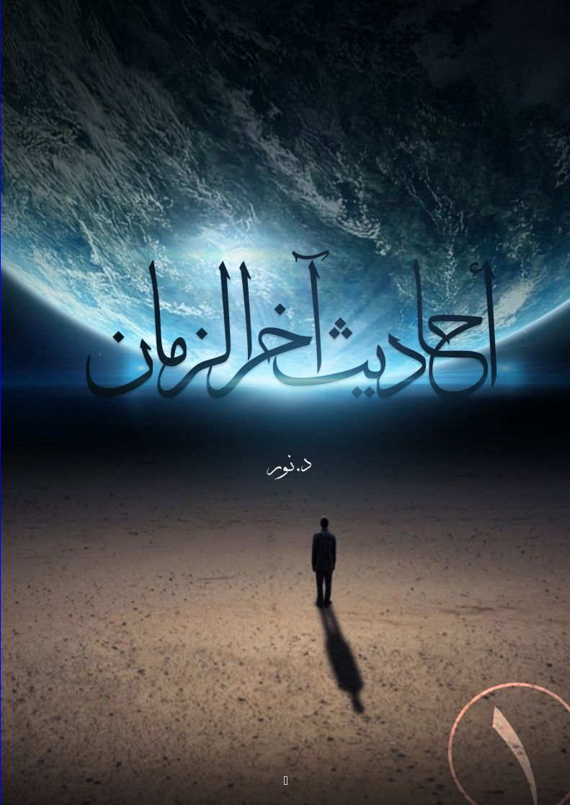

مكتبة علم التاريخ
لمعرفة الطريق الصحيح
اللهم صلي وسلم على محمد وعلى آله وصحبه اجمعين اللهم امين يارب العالمين
مؤلفات مختارة
بروتوكولات حكماء صهيون
منصور عبد الحكيم

موسوعة احاديث اخر الزمان
نور الحلبي
شرح معاني أسماء الله الحسنى
ابو العباس

كيف نفهم النبي في اخر الزمان
نور الحلبي
إغلاق الكتاب ×